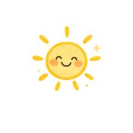

回官網首頁
回官網首頁

精選文章分享
日日暖陽・健康管理與日常保養的知識分享
拉筋後又緊回來？從筋膜的滑動性談起，了解久坐久站為什麼讓筋膜變緊，以及放鬆時真正該掌握的原則。
閱讀全文 →肚子中間鬆鬆的、生完很久還是回不去？認識腹直肌分離是什麼、在家怎麼自我檢測，找到適合自己的照顧方向。
閱讀全文 →健檢正常不代表不需要照顧身體，了解MEAD經絡檢測如何評估身體能量狀態，找到自我照顧的方向。
閱讀全文 →按摩後隔天更痠是正常反應嗎？了解反痠原因、什麼情況要留意，以及肩頸放鬆真正該注意的重點。
閱讀全文 →更多文章陸續分享中 ☀️